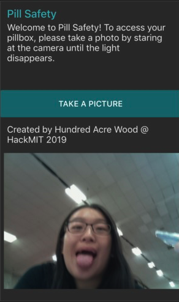

Projects 🖥
Hello! This contains a variety of projects I have worked on including coding and research projects.
Pill Safety
|  |
A 2019 HackMIT project with 3 close friends that won "Best Use of IBM Visual Recognition".
Pill Safety was built with the problem of perscription drug epidemic in America. Teenagers and young adults typically obtain prescription drugs from peers, friends, or family members, even resorting to stealing to get their fix.
When "take a picture" is pressed on the interface, a request is sent from IBM's node-red to a Raspberry Pi. The Raspberry Pi takes a picture and sends it to Dropbox which then node-red retrieves. Classifiers are used on the image to determine if it matches the owner's face. If it does, a request is sent back to the pi to turn the servo motor in order to unlock the box which contains perscription medication. If the image is not the owner, then verification failed and the person will not gain access to the prescription drugs.
I worked on training the visual recognition model and setting up node-red (javascript) to send/receive pictures from the Raspberry Pi through Dropbox.
Suitcase Packer

One of my first completed applications. Although it was the final project for my Data Structures class (Spring 2019), I am proud to have completed it.
Suitcase Packer is an app that allows the user to input a destination and date of vacation in order to return a list of clothes to pack. The app will tell the user the temperature it’ll likely be when they travel. It will then tell the user generic clothing items and accessory items they should pack.
I created this project with Elaney Cheng and Eugenia Zhang as part of our Data Structure final. I worked on reading in the CSV and storing them into hashtables. I also coded the class that returns the average temperate based on date and airport.
Safety First
The starting idea was an app that gathers data from police databases and utilizes historical data to display a heatmap of criminal activity in Boston. This app will then recommend safer areas for foot traffic and provide actual navigation instructions, avoiding areas of highly concentrated violent crime and drug related activities. Although we only were able to implement the heatmap portion, I would like to resume this project one day when I have more technical abilities.
We scraped Boston Police arrest databases and gathered a dataset. Then, we utilized a deep neural network to create a model for geospatial crime frequency data, learning to predict the relative safety of a given area. The neutral network then evaluated the data on a variety of different locations in Boston and created a custom heatmap, which we then turned into a custom Google Maps overlay.
This was my first CS project at my first ever hackathon, done during my first semester at college. I'd admit, I dind't really contribute much. I came up with the idea and helped with managing the team and manually cleaning up the data we collected.
Research 📝
Colonialism in Minecraft

An examanation of how colonialism manifests in Minecraft. Five ways in which Minecraft's mechanics uphold colonialist mentalites include: hostile monsters, villager NPC, inventory and acquistion, terrian generation and exploration, and the achievement system.
This poster was created during the Wellesley College 2019 Science Center Summer Research Program under the advisement of Professor Peter Mawhorter of the Computer Science Department. The paper associated with this project is currently under progress.